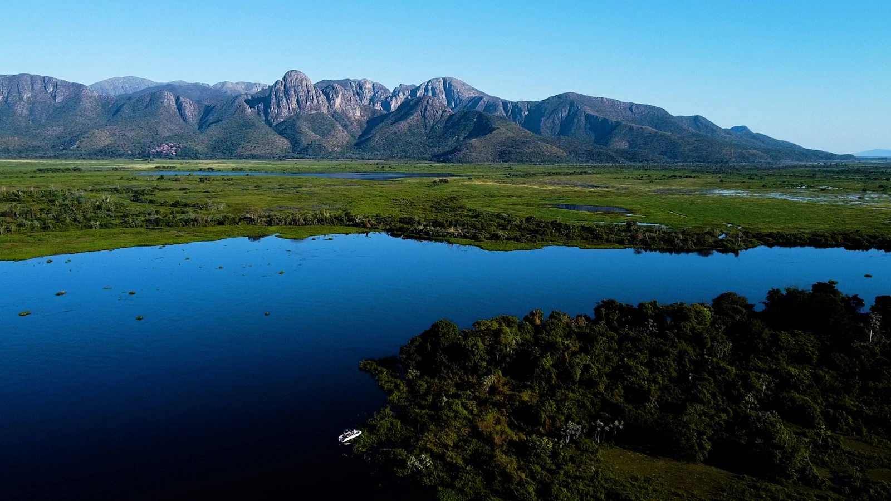
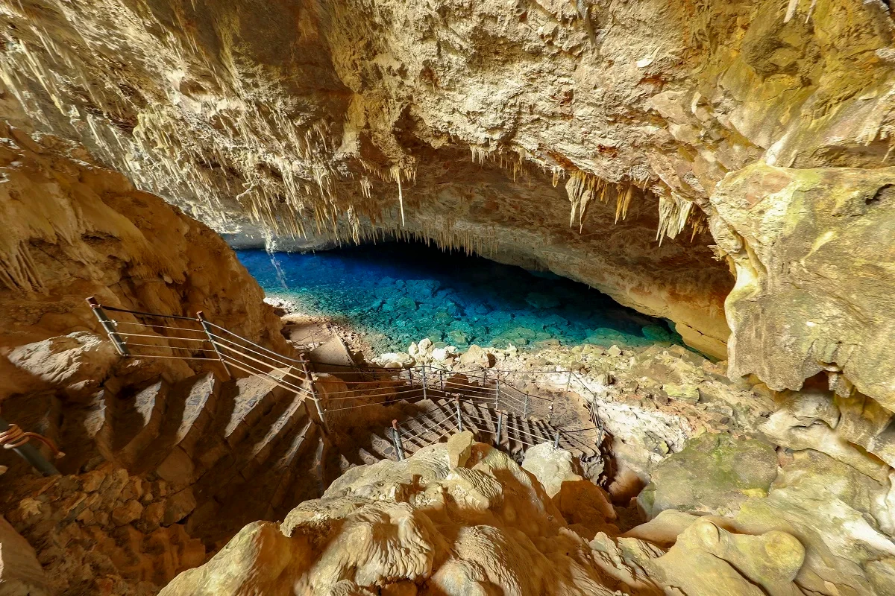
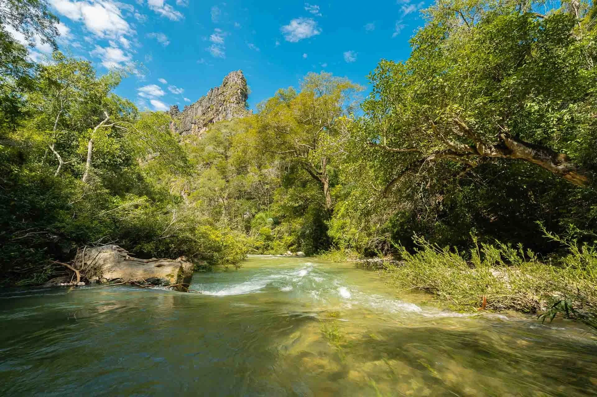
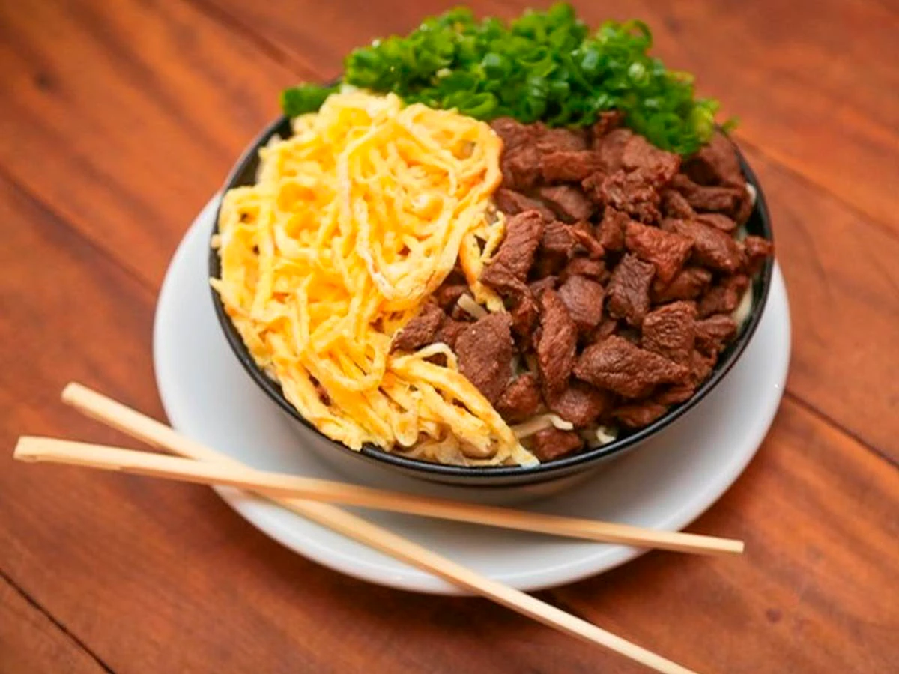
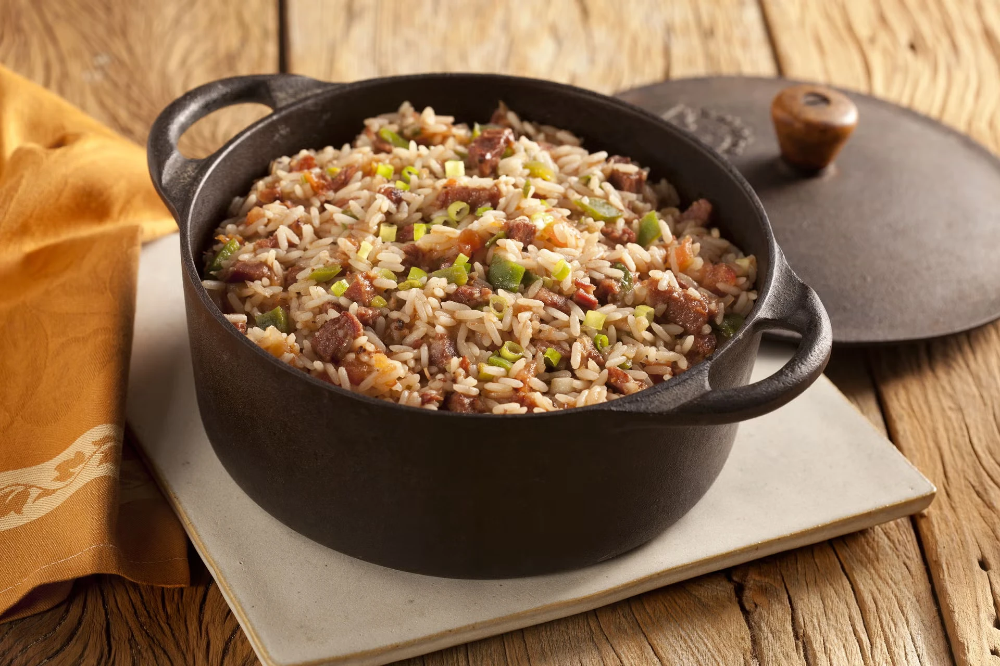
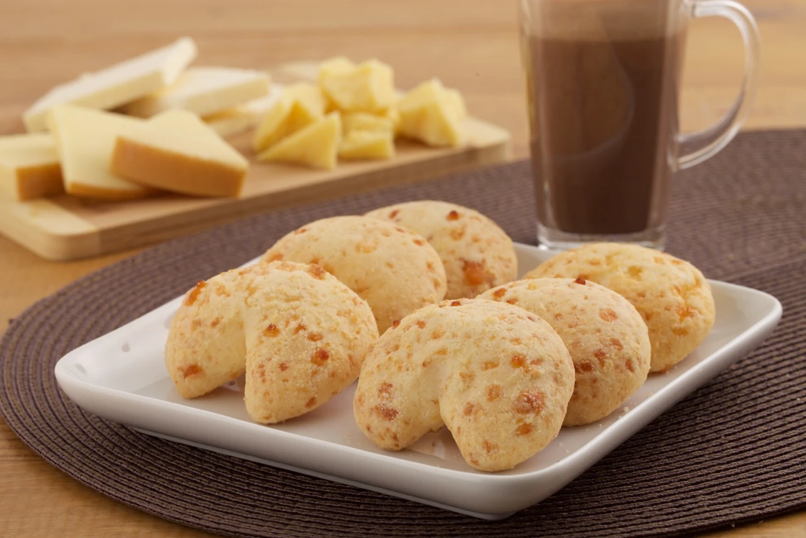

Capital
Campo Grande
Conheça destinos, culturas, sabores e paisagens de todas as regiões
brasileiras.
Destinos, culturas e paisagens
incríveis te esperam.
O Mato Grosso do Sul está localizado na Região Centro-Oeste do Brasil e é conhecido por suas paisagens naturais impressionantes, especialmente o Pantanal, uma das maiores áreas alagadas do mundo. O estado também se destaca pelo ecoturismo, pela biodiversidade e pela forte influência das culturas indígena, paraguaia e pantaneira.

Campo Grande
Aproximadamente 357.145 km²
Cerca de 2,9 milhões de habitantes
Centro-Oeste

Maior planície alagável do planeta, famosa pela observação de animais como onças-pintadas, jacarés, capivaras e inúmeras espécies de aves.

Um dos cartões-postais de Bonito, possui um lago de águas intensamente azuis e formações geológicas impressionantes.

Área de preservação com cachoeiras, trilhas e rios cristalinos, ideal para ecoturismo e aventura.

Prato de origem oriental adaptado à cultura local, preparado com macarrão, carne, omelete e caldo quente.

Receita tradicional feita com arroz, carne seca e temperos, muito popular na região.

Biscoito assado feito com polvilho e queijo, bastante consumido devido à influência cultural do Paraguai.
O clima é predominantemente tropical, com verão quente e chuvoso e inverno mais seco. A melhor época para visitar o Pantanal é durante a estação seca, entre maio e setembro.
O clima é predominantemente tropical, com verão quente e chuvoso e inverno mais seco. A melhor época para visitar o Pantanal é durante a estação seca, entre maio e setembro.
A região de Bonito e da Serra da Bodoquena é ideal para quem gosta de rios cristalinos e ecoturismo. Já o Pantanal é perfeito para observação da fauna e contato com a natureza.
A região de Bonito e da Serra da Bodoquena é ideal para quem gosta de rios cristalinos e ecoturismo. Já o Pantanal é perfeito para observação da fauna e contato com a natureza.
A culinária sul-mato-grossense mistura influências pantaneiras, paraguaias e indígenas, oferecendo pratos únicos como sobá, chipa e arroz carreteiro.
A culinária sul-mato-grossense mistura influências pantaneiras, paraguaias e indígenas, oferecendo pratos únicos como sobá, chipa e arroz carreteiro.